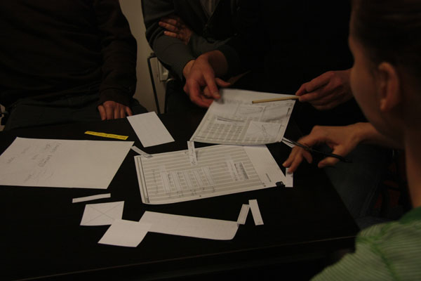

Collaboration in the User Experience Design Process
by MARCIN TREDER
Let me start with a personal story on how I learnt that collaborative design can do miracles.
When I started my career in User Experience Design, I was convinced that the key to my success would be establishing the highest possible role of UX in the organization that I used to work for. I was eager to fight for the good name of design with the whole developer-driven company. And I did. Unfortunately, the result was far from my expectations.
As a young and aspiring User Experience Designer I was part of an IT Frontend Team and… my work was always fiercely questioned. No wonder that when I joined the company as the first UX Designer their world was shaken. Somebody was messing with their product development cycles! No matter whether I delivered wireframes or prototypes or results of usability testing – the developers remained unaffected. I was anxious.
They believed that technology is what matters while interfaces are a kind of ornament decorating what for them, either way, was beautiful code. And since analytics was business-, not user-oriented – they didn’t even know exactly what worked and what didn’t in their products. I just couldn’t stand it.
It took me a couple of months and lots of nervous break-downs to realize that fighting was futile. Endless discussions over the role of design in product development weren’t leading to any reasonable results, because fighting always comes up against resistance. If you instigate a fight, expect your ”opponents” to defend their positions. In a company that wants to create amazing products, constant fights with other departments and specialists are just silly. Dangerously silly. They waste time that should be used for developing products to solve the real-life problems of users.
I discussed all the problems thoroughly with the VP responsible for product development and we decided that collaborative design is our only hope. It was about time to make good use of this and bring peace to our homeland.
Our golden rule, which I advise you to welcome wholeheartedly in your design process, was: in collaborative design take no hostages and leave no man behind.
What does it mean? It’s quite simple:
- You won’t take any hostages if you ensure that you convince people that they are needed in the design process even if they are not designers.
- You won’t leave any men behind if you welcome everybody in the process. And yes I actually mean everybody.
We started our important redesign project with solid research and usability testing in which anybody could help. I welcomed developers to do a cognitive walkthrough with me and digest the results of the usability study. Testers and visual designers did a benchmark study together. We welcomed everybody (including accountants) to paper prototyping sessions during which all employees had a right to express their design ideas.
These paper prototyping sessions gave birth to UXPin Paper Prototyping Notepads with sticky notes. We designed our kits to help people run and participate in such sessions.
When I started to document design and clarify all ideas, I shared every deliverable with the whole company and asked them to review my work.
Of course not every piece of advice and idea made a lot of sense. Some of them were better, some worse and they always required my clarification. It doesn’t matter though. What matters is that the whole company was engaged in the process.
Extra Effort and the Designer’s Ego
Of course collaborative design required extra effort from me and may require something extra from you. I needed to explain and demonstrate all my techniques which were appropriate for the project. What’s even worse, I was forced to fight the irrational fear that people would learn my magical design techniques and would eventually take my place in the organization.
And finally I needed to overcome my “designer’s ego”.
Oh… certainly that was the worst part. Design, which lies at the crossroads of art and science, is an extremely powerful ego booster. When we design, we feel clever and creative at the same time. And we usually feel great responsibility for the final product. Probably because for most people a product equals its design. This gives us a lot of dignity, but at the same time it’s the most dangerous trap you can encounter.
Enormous design ego is a deadfall that can prevent you from creating a great product, because it will emotionally isolate you from your team. To cut the story short: people will hate you and that’s not the best foundation for cooperation.
Collaborative work requires designers to build their self-confidence around the conviction that only the whole team working together can build an excellent product. UX Designers are needed to make it happen, to share knowledge on human behavior and to enhance collaboration in the team.
We fight for users. Our design and research techniques are needed in the process to guide the whole team through the meanders of design challenges.
To work with people you need to decrease your ego and increase your empathy level. That’s the approach of great User Experience Designers
The Result
Did it work? Did collaboration save us? Yes!
Strangely enough, when I stopped fighting for the design position in the organization – it improved. One year after we started to implement collaborative design – I wasn’t the only UX Designer in the company anymore. I was the UX Manager of a respected UX team of five great designers. Nobody questioned our work anymore and final products were way better than in the past.
Collaborative design really works for establishing a healthy design environment, but is also irreplaceable when it comes to motivating the whole team to create stunning products. And this is what User Experience Design is all about: the creation of amazing products and services.
Collaborative design really works for establishing a healthy design environment, but is also irreplaceable when it comes to motivating the whole team to create stunning products. And this is what User Experience Design is all about: the creation of amazing products and services.
When everybody owns a piece of a product idea, everybody is eager to take that extra mile to deliver the product to users in a superb condition. That’s the way my friend, that’s the way.
So the lesson for today is simple: even if you create perfect, reasonable and aesthetic design deliverables, work your fingers to the bone thinking through the product – your design may fail, unless you learn how to collaborate and engage your team in the design process.
6 Rules of collaborative design
Let’s sum up the whole story in a simple set of rules that will hopefully guide you through your own collaborative design process.
1. Start collaboration early in the process and continue it throughout the product development.
It’s not enough just to demonstrate deliverables when they are ready. The people around you must feel that they own a piece of the project and that they can influence the direction in which the project is heading.
You must bring your whole team on board as early as possible. If you’re just about to define the user’s problem – that’s the right time to share it with people and ask them for their opinion. If you’re getting ready to do preliminary research – discuss it with the team and check if anyone wants to help you.
2. Welcome everybody in the process (leave no man behind)
UX Designers have unique skills and knowledge. We know a lot about psychology, ergonomics, HCI and can use specific techniques to nail the design. No questions here. It doesn’t mean though that others can’t have excellent design ideas. Listen to them and you’ll be respected.
It might be a fluke, a sudden burst of creativity, or just natural talent, either way your project will benefit. Leave no man behind – invite everybody to design with you.
3. Explain your design techniques in an engaging way (and take no hostages)
Just as you have to design the design documentation (we discussed it in the second part of the course) – you must ensure a clear and encouraging explanation of your tools and techniques. The whole team must understand what are you up to and why it matters, in order to accept your role and join you in your endeavor. Don’t force people to join you, persuade them to do this. It’s just like designing your position in a product team.
4. Be humble and patient: answer with arguments not aggression
Welcome criticism. Listen to people around you carefully. If you don’t agree with their opinion, answer with some solid arguments. Remember that you’re working at the crossroads of art and science and the science part of design can arm you with great argumentation.
You certainly know why ”confirmation messages” are related in a green color, while alerts use a red hue to warn people. Explain this to your teammates and let them be amazed by the knowledge that backs-up your design decisions.
5. Accept opinions on every deliverable and research result
Every deliverable that’s important for your design project is important for your team. To grasp the whole picture of the project, they need to see your whole design process and be able to discuss it. Browsing through wireframes is usually not enough (we discussed the importance of context in the design documentation in the second part of the course)
6. Never forget your ultimate goal: The creation of stunning products that will solve your users’ problems
User Experience Design has one ultimate goal – the creation of a great user experience. Don’t forget about this and don’t focus too much on the deliverable part of your work.The whole team should understand this and define your role through the ultimate goal.
A step-by-step guide through collaboration
Time for a step-by-step exercise to warm you up and give you some pure practical advice for your next project.
In the story of my struggle and final peace in the collaborative design approach I mentioned that we started with paper prototyping sessions for the whole company. I’d recommend you try it in your own project.
Remember that before people grab pencils, paper and scissors and start prototyping, you should all discuss who your users are, what problems you are trying to solve, and what business and technical requirements and limits there are. You must give people a solid background before they get creative. Remember: creativity thrives on knowledge – and your role is to feed them with your experience. If you can back up discussion with some research – that’s all for the best!
After the paper prototyping session, every participant should present their work and you should encourage people to applaud it, discuss its merits and flaws.
Take some notes on every presented deliverable – you’ll need these later on in the process.
2. On the digital side, start with inviting your team to a project.
After your ”analog” meetings, it’s time to go fully digital and use your knowledge from part one and part two of our course. It’s time to create contextualized and aesthetic design documentation.This time though, start with inviting your whole team to a project in UXPin App. They will sense that you care about their opinion and that they are actually part of the design process.This will eliminate resistance and really motivate them to focus on the final user experience of the product that you’re about to create.
3. Demonstrate your design process and all the deliverables
Demonstrate the whole design process to your team. Let them see your personas, diagrams, wireframes, business model canvas… etc.Understanding the role of design in a project is absolutely crucial. In this case, every image is worth thousands of words.
4. Invite them to comment on every piece of a design that’s ready
The whole team should know that they can review every design deliverable and you should welcome every opinion. In UXPin it doesn’t matter whether it’s a wireframe of a persona – every team member can easily add a comment to it.
5. Encourage them to express their thoughts visually by co-wireframing
To engage your team in the design process even deeper you can invite them to… wireframe with you. This is the kind of exercise which will deeply integrate you with your whole team.Thanks to real-time collaboration you can all edit the same wireframe at the same time.
Sum up
In the first two parts of the course you learnt what deliverables are and how to use them to clearly communicate design. In this part of the course you’ve learnt that it’s not enough to merely learn specific skills to create a stunning user experience – you actually need to effectively work with people.
I hope that the story from my experience, the rules that we coined and the step-by-step guide through the UXPin tool, will help you in your everyday battle for the good of users.Fingers crossed and let me know how it goes!